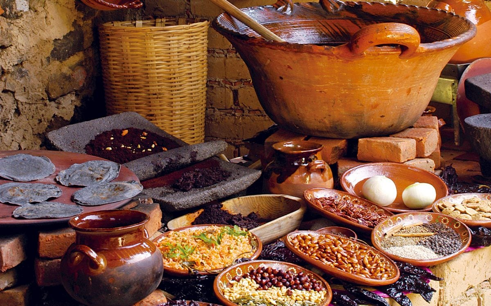
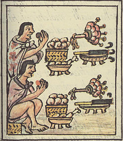

Gastronomia mexicana
La cocina mexicana se compone de una variedad de platos que reflejan una riqueza acumulada a lo largo del tiempo: desde la época prehispánica, hasta la época colonial, e incluso la época contemporánea. Aunque nuestra cocina se reinventa constantemente, algunos de nuestros pueblos indígenas aún la acechan.
Nuestra cocina mexicana fue declarada Patrimonio Cultural Inmaterial de la Humanidad por la UNESCO en 2010, ya que los matrimonios mixtos enriquecieron enormemente nuestra gastronomía. Así que no está de más hacer un breve repaso a su historia.

¿ Cual es el origen de su gastronomia
La cocina mexicana tiene sus orígenes en la época prehispánica. En esta época se crearon una serie de platos basados en los tres ingredientes principales: maíz, frijol y pimiento. Estos alimentos también se sirven con hierbas, carne de animales pequeños, chocolate, aves y pescado.
Lamentablemente, según El Gran Libro de la Gastronomía Mexicana, no existen recetas puramente prehispánicas. Esto se debe a la falta de fuentes o códices que los registren y a la mezcla de cocinas que se produjo durante el período colonial. Por lo tanto, la cocina tal como la conocemos hoy debe su existencia a la preservación de comunidades indígenas y mestizas.
